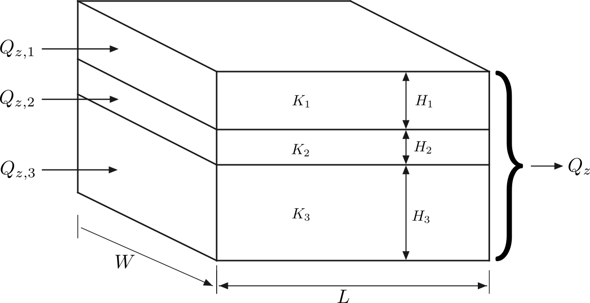
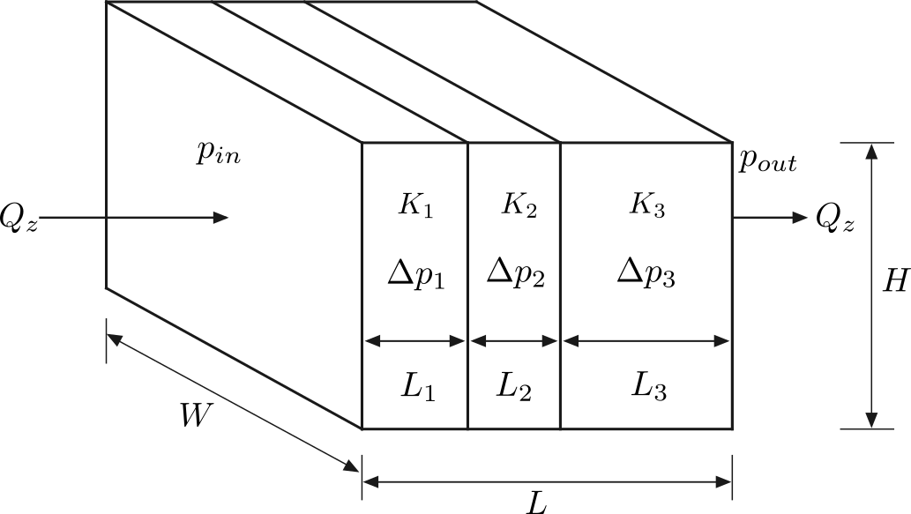

Series and Parallel Porous Media Association¶
This example examines parallel and series configurations to assess how permeability and porosity contrasts influence the macroscopic flow response. Numerical simulations are compared with analytical reference estimates, and the effects of nonlinear Forchheimer drag are evaluated.
Effective Permeability of Parallell Association¶
For a system consisting of \(n\) porous layers arranged in parallel to the flow direction, the effective permeability is commonly calculated using the area-weighted arithmetic average:
where \(K_i\), \(S_i\), and \(h_i\) denote the intrinsic permeability, cross-sectional area, and thickness of layer \(i\), respectively. The second equality assumes that all layers have the same width perpendicular to the flow direction.
This expression follows from Darcy’s law when all layers are subjected to the same macroscopic pressure gradient and interlayer viscous shear effects are neglected. Although the porosity may differ between layers, its influence is represented implicitly through the intrinsic permeability \(K_i\). Consequently, this arithmetic average does not explicitly account for momentum diffusion between adjacent layers.
To incorporate interlayer viscous coupling, we consider the steady-state Darcy–Brinkman equation for unidirectional flow along the \(x\)-direction, with material properties varying only in the transverse \(y\)-direction.
Assuming incompressible flow, constant fluid density, and piecewise-constant material properties within each layer, the governing equation is
where:
\(u_i(y)\) is the intrinsic (pore-averaged) fluid velocity in layer \(i\);
\(\epsilon_i\) is the porosity of layer \(i\);
\(K_i\) is the intrinsic permeability of layer \(i\);
\(\nu\) is the fluid kinematic viscosity;
\(\nu_{e,i}\) is the effective Brinkman kinematic viscosity in layer \(i\);
\(G_x\) is the imposed acceleration or equivalent pressure-gradient forcing per unit mass;
\(y_i = \sum_{j=1}^{i}h_j\) defines the upper boundary of layer \(i\), with \(y_0=0\).
For constant \(\epsilon_i\), \(K_i\), and \(\nu_{e,i}\) within each layer, the analytical solution is
where \(C_i\) and \(D_i\) are integration constants determined from the interface and boundary conditions. The total height of the layered system is \(H = \sum_{i=1}^{n}h_i\).
Interface and Boundary Conditions¶
At each internal interface \(y=y_i\), for \(i=1,\ldots,n-1\), the following conditions are imposed.
1. Continuity of intrinsic velocity
This condition assumes that the intrinsic velocity is continuous across the interface, consistent with the adopted Brinkman interface model.
2. Continuity of tangential viscous stress
For constant effective viscosity across all layers, this reduces to
3. Periodic boundary conditions
To represent a periodically repeated arrangement of porous layers in the transverse direction, periodic boundary conditions are imposed at \(y=0\) and \(y=H\):
These conditions enforce periodicity of the intrinsic velocity and continuity of tangential viscous stress across the periodic boundary.
Determination of the Integration Constants¶
For a system containing \(n\) porous layers, the general solution introduces \(2n\) unknown integration constants:
The \(n-1\) internal interfaces provide \(2(n-1)\) equations, while the two periodic boundary conditions provide two additional equations.
Therefore, the complete system consists of \(2n\) linear equations for \(2n\) unknown coefficients and can be expressed as
The integration constants can be obtained using standard linear algebra methods, allowing the velocity profile in each porous layer to be reconstructed analytically.
Three Layers (\(n=3\)) Parallel Association¶
To assess the model’s ability to capture viscous shear and momentum transfer between adjacent porous media, a configuration comprising three porous layers arranged parallel to the flow direction was considered. The computational domain extends 50 voxels along the flow direction and contains three layers stacked in the transverse direction, with thicknesses of 20, 50, and 30 voxels, respectively, giving a total height of 100 voxels (Fig. 37).
The layers were assigned permeabilities of \(K_1 = 100.0 \ \mu\text{m}^2\), \(K_2 = 250.0 \ \mu\text{m}^2\), and \(K_3 = 500.0 \ \mu\text{m}^2\), with corresponding porosities of \(\epsilon_1 = 0.2\), \(\epsilon_2 = 0.3\), and \(\epsilon_3 = 0.4\). The simulations used a spatial resolution of \(0.5 \ \mu\text{m}/\text{voxel}\), a relaxation time of \(\tau \approx 0.933\), and a uniform body force of magnitude \(10^{-8}\) in lattice units, applied along the flow direction.


Fig. 37 - Schematic of three porous layers arranged parallel to the flow direction.¶
Porosity and permeability were assigned using two methods configured in
input.db: label-based property lists and voxelwise property maps.
The Python functions used to generate the geometry, layer labels, and
property maps are provided in the expandable section below.
Click to expand:Python Code to Generate the Parallel Association Geometry
import os
import numpy as np
def generate_geometry_raw(
length: int, height: tuple[int, int, int], output_dir: str
) -> None:
"""Generates the geometry matrix in uint8 format."""
total_height = sum(height)
shape = (length, total_height, length)
geometry = np.ones(shape, dtype=np.uint8)
filepath = os.path.join(output_dir, "input.raw")
geometry.tofile(filepath)
def generate_labels_raw(
length: int, height: tuple[int, int, int], output_dir: str
) -> None:
"""Generates the labels matrix in uint8 format for multiple layers."""
total_height = sum(height)
shape = (length, total_height, length)
labels = np.zeros(shape, dtype=np.uint8)
h0, h1, h2 = height
labels[:, :h0, :] = 1
labels[:, h0 : h0 + h1, :] = 2
labels[:, h0 + h1 :, :] = 3
filepath = os.path.join(output_dir, "labels.raw")
labels.tofile(filepath)
def generate_permeability_raw(
length: int,
height: tuple[int, int, int],
permeability: tuple[float, float, float],
output_dir: str,
) -> None:
"""Generates the permeability matrix in float64 format."""
total_height = sum(height)
shape = (length, total_height, length)
permeability_matrix = np.zeros(shape, dtype=np.float64)
h0, h1, h2 = height
k0, k1, k2 = permeability
permeability_matrix[:, :h0, :] = k0
permeability_matrix[:, h0 : h0 + h1, :] = k1
permeability_matrix[:, h0 + h1 :, :] = k2
filepath = os.path.join(output_dir, "permeability.raw")
permeability_matrix.tofile(filepath)
def generate_porosity_raw(
length: int,
height: tuple[int, int, int],
porosity: tuple[float, float, float],
output_dir: str,
) -> None:
"""Generates the porosity matrix in float64 format."""
total_height = sum(height)
shape = (length, total_height, length)
porosity_matrix = np.zeros(shape, dtype=np.float64)
h0, h1, h2 = height
phi0, phi1, phi2 = porosity
porosity_matrix[:, :h0, :] = phi0
porosity_matrix[:, h0 : h0 + h1, :] = phi1
porosity_matrix[:, h0 + h1 :, :] = phi2
filepath = os.path.join(output_dir, "porosity.raw")
porosity_matrix.astype(np.float64).tofile(filepath)
Four cases were simulated by combining the two property-assignment methods with Forchheimer drag either disabled or enabled. Table 14 compares the numerical results with the analytical Darcy–Brinkman solution, which excludes nonlinear Forchheimer drag.
With Forchheimer drag disabled, both methods yield an effective permeability of \(251.680 \ \mu\text{m}^2\), differing from the analytical value of \(251.660 \ \mu\text{m}^2\) by approximately \(0.008\%\). Enabling Forchheimer drag reduces the apparent permeability to \(248.360 \ \mu\text{m}^2\), approximately \(1.31\%\) below the linear analytical reference. Both property-assignment methods give the same results to the precision reported, and the volume-averaged porosity is \(0.310\) in all cases.
Case |
Mode |
Forchheimer |
Porosity |
Permeability [ \(\mu\text{m}^2\) ] |
|---|---|---|---|---|
Analytical |
Math |
False |
0.310 |
251.660 |
Case 1 |
Labels |
False |
0.310 |
251.680 |
Case 2 |
Files |
False |
0.310 |
251.680 |
Case 3 |
Labels |
True |
0.310 |
248.360 |
Case 4 |
Files |
True |
0.310 |
248.360 |
An example input.db for the present configuration is provided below.
Click to expand: Parallel Association Example of Input.db file
Greyscale {
tau = 0.9330127
F = 0.0, 0.0, 1e-08
timestepMax = 1000000
tolerance = 1e-12
collision = "MRT"
Forchheimer = false
ComponentLabels = 1, 2, 3 // not necessary for file aproach
PorosityList = 0.2, 0.3, 0.4 // or FileVoxelPorosityMap = "porosity.raw", "double"
PermeabilityList = 100.0, 250.0, 500.0 // or FileVoxelPermeabilityMap = "permeability.raw", "double"
}
Domain {
Filename = "input.raw" // or "label.raw"
ReadType = "8bit"
offset = 0, 0, 0
voxel_length = 0.5
N = 50, 100, 50
nproc = 1, 1, 1
n = 50, 100, 50
ReadValues = 0, 1, 2, 3
WriteValues = 0, 1, 2, 3
InletLayers = 0, 0, 0
OutletLayers = 0, 0, 0
BC = 0
}
Visualization {
format = "vtk"
write_silo = true
save_8bit_raw = false
save_phase_field = true
save_pressure = true
save_velocity = true
}
Analysis {
analysis_interval = 1000
subphase_analysis_interval = 5000
visualization_interval = 1000000
N_threads = 1
restart_interval = 1000000
restart_file = "Restart"
}
Effective Permeability of Series Association¶
For a system consisting of \(n\) porous layers arranged in series along the flow direction, the effective permeability is commonly calculated using the length-weighted harmonic average:
where \(L_i\) and \(K_i\) denote the length and intrinsic permeability of layer \(i\), respectively.
This expression follows from Darcy’s law under steady-state, incompressible, one-dimensional flow conditions, assuming a constant cross-sectional area and negligible additional interfacial hydraulic resistance. Although the porosity may vary between layers, its influence is implicitly represented through the intrinsic permeability \(K_i\). Consequently, the harmonic average remains applicable to porous media with variable porosity, provided that Darcy’s law is valid within each layer.
Conservation of Mass¶
For steady-state, incompressible, one-dimensional flow, conservation of mass requires
where \(u\) is the intrinsic (pore-averaged) velocity and \(\epsilon\) is the porosity.
Consequently, the superficial (Darcy) velocity remains constant:
Therefore, for layers with different porosities, the intrinsic velocity is given by
Thus, the intrinsic velocity generally varies between layers, while the superficial velocity remains constant.
Effective Permeability¶
Starting from the steady-state Darcy-Brinkman equation for unidirectional flow driven by a constant effective force \(G_x\):
Since the velocity is uniform (\(u(y) = \bar{u}\)), the viscous shear term vanishes (\(\frac{d^2u}{dy^2} = 0\)). Assuming constant properties for each porous medium, we integrate the remaining terms along the \(x\)-axis to represent the macroscopic momentum balance over the entire length \(L\):
Evaluating the integral for the piecewise constant properties yields:
Rearranging the terms to isolate the uniform velocity and effective force relationship:
This yields the equivalent permeability:
Three Layers (\(n=3\)) Series Association¶
To assess the model’s accuracy in predicting the effective macroscopic permeability of porous media arranged in series, a configuration comprising three consecutive porous layers was considered. The layers extend along the flow direction, with lengths of 15, 50, and 25 voxels, respectively, giving a total domain length of 90 voxels. All layers share a \(50 \times 50\)-voxel cross section (Fig. 38).
The layers were assigned permeabilities of \(K_1 = 100.0 \ \mu\text{m}^2\), \(K_2 = 250.0 \ \mu\text{m}^2\), and \(K_3 = 500.0 \ \mu\text{m}^2\), with corresponding porosities of \(\epsilon_1 = 0.2\), \(\epsilon_2 = 0.3\), and \(\epsilon_3 = 0.4\). The simulations used a spatial resolution of \(0.5 \ \mu\text{m}/\text{voxel}\), a relaxation time of \(\tau \approx 0.933\), and a uniform driving force of magnitude \(10^{-8}\) in lattice units, applied along the \(z\)-direction. All simulations were run using four MPI processes.


Fig. 38 - Schematic of three porous layers arranged in series along the flow direction.¶
Porosity and permeability were assigned using two methods configured in
input.db: label-based property lists and voxelwise property maps.
The Python functions used to generate the geometry, layer labels, and
property maps are provided in the expandable section below.
Click to expand: Python Code to Generate the Series Association Geometry
import os
import numpy as np
def generate_geometry_raw(
length: tuple[int, int, int], height: int, output_dir: str
) -> None:
"""Generates the geometry matrix in uint8 format.
The porous medium is assigned a value of 1 throughout the entire domain.
Args:
length: A tuple containing the lengths of the three layers along the x-axis.
height: The height and width of the domain (y and z axes).
output_dir: The directory where the file will be saved.
"""
total_length = sum(length)
shape = (total_length, height, height)
geometry = np.ones(shape, dtype=np.uint8)
filepath = os.path.join(output_dir, "input.raw")
geometry.tofile(filepath)
def generate_labels_raw(
length: tuple[int, int, int], height: int, output_dir: str
) -> None:
"""Generates the labels matrix in uint8 format for multiple layers in series.
Assigns a distinct integer label (1, 2, 3) to each horizontal layer along
the flow direction (x-axis).
Args:
length: A tuple containing the lengths of the three layers along the x-axis.
height: The height and width of the domain (y and z axes).
output_dir: The directory where the file will be saved.
"""
total_length = sum(length)
shape = (total_length, height, height)
labels = np.zeros(shape, dtype=np.uint8)
l0, l1, l2 = length
labels[:l0, :, :] = 1
labels[l0 : l0 + l1, :, :] = 2
labels[l0 + l1 :, :, :] = 3
filepath = os.path.join(output_dir, "labels.raw")
labels.tofile(filepath)
def generate_permeability_raw(
length: tuple[int, int, int],
height: int,
permeability: tuple[float, float, float],
output_dir: str,
) -> None:
"""Generates the permeability matrix in float64 format.
Fills each layer in series with its respective macroscopic permeability value.
Args:
length: A tuple containing the lengths of the three layers along the x-axis.
height: The height and width of the domain (y and z axes).
permeability: A tuple containing the permeability values for each layer.
output_dir: The directory where the file will be saved.
"""
total_length = sum(length)
shape = (total_length, height, height)
permeability_matrix = np.zeros(shape, dtype=np.float64)
l0, l1, l2 = length
k0, k1, k2 = permeability
permeability_matrix[:l0, :, :] = k0
permeability_matrix[l0 : l0 + l1, :, :] = k1
permeability_matrix[l0 + l1 :, :, :] = k2
filepath = os.path.join(output_dir, "permeability.raw")
permeability_matrix.tofile(filepath)
def generate_porosity_raw(
length: tuple[int, int, int],
height: int,
porosity: tuple[float, float, float],
output_dir: str,
) -> None:
"""Generates the porosity matrix in float64 format.
Fills each layer in series with its respective macroscopic porosity fraction.
Args:
length: A tuple containing the lengths of the three layers along the x-axis.
height: The height and width of the domain (y and z axes).
porosity: A tuple containing the porosity values for each layer.
output_dir: The directory where the file will be saved.
"""
total_length = sum(length)
shape = (total_length, height, height)
porosity_matrix = np.zeros(shape, dtype=np.float64)
l0, l1, l2 = length
phi0, phi1, phi2 = porosity
porosity_matrix[:l0, :, :] = phi0
porosity_matrix[l0 : l0 + l1, :, :] = phi1
porosity_matrix[l0 + l1 :, :, :] = phi2
filepath = os.path.join(output_dir, "porosity.raw")
porosity_matrix.tofile(filepath)
Four cases were simulated by combining the two property-assignment methods with Forchheimer drag either disabled or enabled. Table 15 compares the numerical results with the analytical reference obtained from the porosity-weighted expression introduced above, which excludes nonlinear Forchheimer drag.
With Forchheimer drag disabled, both methods yield an effective permeability of \(254.550 \ \mu\text{m}^2\), differing from the reported analytical reference of \(254.545 \ \mu\text{m}^2\) by approximately \(0.002\%\). Enabling Forchheimer drag reduces the apparent permeability to \(251.120 \ \mu\text{m}^2\), approximately \(1.35\%\) below the linear reference. Both property-assignment methods give the same results to the precision reported. The volume-averaged porosity is approximately \(0.311\) in all cases.
Case |
Mode |
Forchheimer |
Porosity |
Permeability [ \(\mu\text{m}^2\) ] |
|---|---|---|---|---|
Analytical |
Math |
False |
0.311 |
254.545 |
Case 1 |
Labels |
False |
0.311 |
254.550 |
Case 2 |
Files |
False |
0.311 |
254.550 |
Case 3 |
Labels |
True |
0.311 |
251.120 |
Case 4 |
Files |
True |
0.311 |
251.120 |
An example input.db configuration is provided in the expandable
Click to expand: Series Association Example of Input.db file
Greyscale {
tau = 0.9330127
F = 0.0, 0.0, 1e-08
timestepMax = 1000000
tolerance = 1e-12
collision = "MRT"
Forchheimer = false
ComponentLabels = 1, 2, 3 // not necessary for file aproach
PorosityList = 0.2, 0.3, 0.4 // or FileVoxelPorosityMap = "porosity.raw", "double"
PermeabilityList = 100.0, 250.0, 500.0 // or FileVoxelPermeabilityMap = "permeability.raw", "double"
}
Domain {
Filename = "input.raw" // or "label.raw"
ReadType = "8bit"
offset = 0, 0, 0
voxel_length = 0.5
N = 50, 50, 90
nproc = 2, 1, 2
n = 25, 50, 45
ReadValues = 0, 1, 2, 3
WriteValues = 0, 1, 2, 3
InletLayers = 0, 0, 0
OutletLayers = 0, 0, 0
BC = 0
}
Visualization {
format = "vtk"
write_silo = true
save_8bit_raw = false
save_phase_field = true
save_pressure = true
save_velocity = true
}
Analysis {
analysis_interval = 1000
subphase_analysis_interval = 5000
visualization_interval = 1000000
N_threads = 1
restart_interval = 1000000
restart_file = "Restart"
}